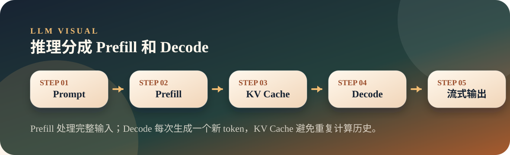

从零开始理解大模型
07. 推理：按下回车后的这一秒
推理阶段不更新参数，而是把输入送进模型，逐 token 生成输出，并用 KV Cache 避免重复计算。
InferenceKV CacheDecode
Position
主线定位
你按下回车后，服务端不是瞬间吐出整段话，而是先处理完整输入，再一个 token 一个 token 地生成输出。
Visual
图解流程

推理像餐厅出餐：Prefill 是先读完整菜单和备注，Decode 是一道一道上菜，KV Cache 是把已读过的信息放在手边，不用每次重读。
Run First
先跑实验
对比有无 KV Cache 时，每一步处理 token 数和耗时的差异。
演示命令
python3 llm/07-inference/inference.pyKey Code
关键代码
这部分只看最能解释机制的片段，先抓数据怎么流动，再回到完整脚本。
无 KV Cache：每步重算全部
没有缓存时，每生成一个 token 都要把全部历史重新送进模型。
31 with torch.no_grad():
32 for step in range(max_new_tokens):
33 step_start = time.time()
34
35 # 每次把 全部已有 token 送入模型（无缓存）
36 outputs = model(generated)
37 next_logits = outputs.logits[0, -1, :]
38 next_token = torch.argmax(next_logits).unsqueeze(0).unsqueeze(0)
39 generated = torch.cat([generated, next_token], dim=1)
40
41 step_time = (time.time() - step_start) * 1000
42 step_times.append(step_time)
43
44 token_text = tokenizer.decode(next_token[0])
45 total_tokens = generated.shape[1]
46 print(f" Step {step+1:>2}: '{token_text}' "
47 f"({step_time:.0f}ms, 处理了 {total_tokens} 个 token)")
48
49 if next_token.item() == tokenizer.eos_token_id:
50 break
51
52 no_cache_total = time.time() - start
53 no_cache_text = tokenizer.decode(generated[0])
54
55 print(f"\n 总耗时: {no_cache_total*1000:.0f}ms")
56 print(f" 平均每步: {sum(step_times)/len(step_times):.0f}ms")
57 print(f" 输出: '{no_cache_text}'")有 KV Cache：Prefill 后只处理新 token
第一次处理完整输入，后续只处理新 token，这就是推理加速的关键。
72 with torch.no_grad():
73 for step in range(max_new_tokens):
74 step_start = time.time()
75
76 if past_kv is None:
77 # Prefill：第一次，处理全部输入
78 outputs = model(input_ids, use_cache=True)
79 phase = "Prefill"
80 tokens_processed = input_ids.shape[1]
81 else:
82 # Decode：后续，只处理最后一个新 token
83 outputs = model(next_token_ids, past_key_values=past_kv, use_cache=True)
84 phase = "Decode"
85 tokens_processed = 1
86
87 past_kv = outputs.past_key_values
88 next_logits = outputs.logits[0, -1, :]
89 next_token_id = torch.argmax(next_logits)
90 next_token_ids = next_token_id.unsqueeze(0).unsqueeze(0)
91 generated_ids = torch.cat([generated_ids, next_token_ids], dim=1)
92
93 step_time = (time.time() - step_start) * 1000
94 step_times_cached.append(step_time)
95
96 token_text = tokenizer.decode(next_token_id)
97 print(f" Step {step+1:>2}: '{token_text}' "
98 f"({step_time:.0f}ms, {phase}, 处理了 {tokens_processed} 个 token)")
99
100 if next_token_id.item() == tokenizer.eos_token_id:
101 break
102
103 cache_total = time.time() - start
104 cache_text = tokenizer.decode(generated_ids[0])
105
106 print(f"\n 总耗时: {cache_total*1000:.0f}ms")
107 print(f" Prefill: {step_times_cached[0]:.0f}ms")
108 print(f" 平均 Decode: {sum(step_times_cached[1:])/max(len(step_times_cached)-1,1):.0f}ms")
109 print(f" 输出: '{cache_text}'")Observe
观察解释
运行时不要只看最后一行，重点看中间过程如何证明本讲机制。
- 无 Cache 模式每一步都会重算全部已有 token，越生成越慢。
- 有 Cache 模式第一步 Prefill 较重，后续 Decode 只处理新 token。
- 脚本会打印加速比和 KV Cache 占用信息。
- 这能解释为什么长输出和高并发会给推理系统带来压力。
Try It
动手改一轮
把推理讲成 Prefill 和 Decode 两段，很多性能问题会立刻变清楚。
- 把
max_new_tokens调大，观察无 Cache 模式的耗时增长。 - 修改 prompt 长度，观察 Prefill 成本变化。
- 对照第八讲，理解上下文越长为什么 KV Cache 越大。
Map
前后关系
这一页不是孤立知识点，它会连接前面已经讲过的机制，也为后面的章节铺路。
- 推理不改变模型参数，只根据当前上下文生成 token。
- Prefill 处理输入，Decode 逐 token 输出。
- KV Cache 用显存换速度，是推理系统的核心优化之一。
- 用户感知到的流式输出，本质是 Decode 阶段逐 token 返回。
- 推理快慢不仅由模型大小决定，也受上下文长度和生成长度影响。
- KV Cache 是大模型服务成本的重要来源。
Boundary
易混点
- 不要把“首 token 慢”和“后续 token 慢”混为一谈，它们对应不同阶段。
- KV Cache 加速计算，但会占用显存。
- 输出越长，Decode 次数越多，成本自然更高。
Extend
继续阅读
教学页只保留现场讲解需要的内容，完整文章与代码仍然保留在仓库中。